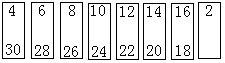

第十一讲 简单的抽屉原理
把3个苹果任意放到两个抽屉里，可以有哪些放置的方法呢？一个抽屉放一个，另一个抽屉放两个；或3个苹果放在某一个抽屉里.尽管放苹果的方式有所不同，但是总有一个共同的规律：至少有一个抽屉里有两个或两个以上的苹果.如果把5个苹果任意放到4个抽屉里，放置的方法更多了，但仍有这样的结果.由此我们可以想到，只要苹果的个数多于抽屉的个数，就一定能保证至少有一个抽屉里有两个或两个以上的苹果.道理很简单：如果每个抽屉里的苹果都不到两个（也就是至多有1个），那么所有抽屉里的苹果数的和就比总数少了.由此得到：
抽屉原理：把多于n个的苹果放进n个抽屉里，那么至少有一个抽屉里有两个或两个以上的苹果。
如果把苹果换成了鸽子，把抽屉换成了笼子，同样有类似的结论，所以有时也把抽屉原理叫做鸽笼原理.不要小看这个“原理”，利用它可以解决一些表面看来似乎很难的数学问题。
比如，我们从街上随便找来13人，就可以断定他们中至少有两个人属相（指鼠、牛、虎、兔、…等十二种生肖）相同.怎样证明这个结论是正确的呢？只要利用抽屉原理就很容易把道理讲清楚.事实上，由于人数（13）比属相数（12）多，因此至少有两个人属相相同（在这里，把13人看成13个“苹果”，把12种属相看成12个“抽屉”）。
应用抽屉原理要注意识别“抽屉”和“苹果”，苹果的数目一定要大于抽屉的个数。
例1 有5个小朋友，每人都从装有许多黑白围棋子的布袋中任意摸出3枚棋子.请你证明，这5个人中至少有两个小朋友摸出的棋子的颜色的配组是一样的。
分析与解答 首先要确定3枚棋子的颜色可以有多少种不同的情况，可以有：3黑，2黑1白，1黑2白，3白共4种配组情况，看作4个抽屉.把每人的3枚棋作为一组当作一个苹果，因此共有5个苹果.把每人所拿3枚棋子按其颜色配组情况放入相应的抽屉.由于有5个苹果，比抽屉个数多，所以根据抽屉原理，至少有两个苹果在同一个抽屉里，也就是他们所拿棋子的颜色配组是一样的。
例2 一副扑克牌（去掉两张王牌），每人随意摸两张牌，至少有多少人才能保证他们当中一定有两人所摸两张牌的花色情况是相同的？
分析与解答 扑克牌中有方块、梅花、黑桃、红桃4种花色，2张牌的花色可以有：2张方块，2张梅花，2张红桃，2张黑桃，1张方块1张梅花，1张方块1张黑桃，1张方块1张红桃，1张梅花1张黑桃，1张梅花1张红桃，1张黑桃1张红桃共计10种情况.把这10种花色配组看作10个抽屉，只要苹果的个数比抽屉的个数多1个就可以有题目所要的结果.所以至少有11个人。
例3 证明：任取8个自然数，必有两个数的差是7的倍数。
分析与解答 在与整除有关的问题中有这样的性质，如果两个整数a、b，它们除以自然数m的余数相同，那么它们的差a-b是m的倍数.根据这个性质，本题只需证明这8个自然数中有2个自然数，它们除以7的余数相同.我们可以把所有自然数按被7除所得的7种不同的余数0、1、2、3、4、5、6分成七类.也就是7个抽屉.任取8个自然数，根据抽屉原理，必有两个数在同一个抽屉中，也就是它们除以7的余数相同，因此这两个数的差一定是7的倍数。
把所有整数按照除以某个自然数m的余数分为m类，叫做m的剩余类或同余类，用[0]，[1]，[2]，…，[m-1]表示.每一个类含有无穷多个数，例如[1]中含有1，m+1，2m＋1，3m＋1，….在研究与整除有关的问题时，常用剩余类作为抽屉.根据抽屉原理，可以证明：任意n+1个自然数中，总有两个自然数的差是n的倍数。
在有些问题中，“抽屉”和“苹果”不是很明显的，需要精心制造“抽屉”和“苹果”.如何制造“抽屉”和“苹果”可能是很困难的，一方面需要认真地分析题目中的条件和问题，另一方面需要多做一些题积累经验。
例4 从2、4、6、…、30这15个偶数中，任取9个数，证明其中一定有两个数之和是34。
分析与解答 我们用题目中的15个偶数制造8个抽屉：

凡是抽屉中有两个数的，都具有一个共同的特点：这两个数的和是34。
现从题目中的15个偶数中任取9个数，由抽屉原理（因为抽屉只有8个），必有两个数在同一个抽屉中.由制造的抽屉的特点，这两个数的和是34。
例5 从1、2、3、4、…、19、20这20个自然数中，至少任选几个数，就可以保证其中一定包括两个数，它们的差是12。分析与解答在这20个自然数中，差是12的有以下8对：
｛20，8｝，｛19，7｝，｛18，6｝，｛17，5｝，｛16，4｝，｛15，3｝，｛14，2｝，｛13，1｝。
另外还有4个不能配对的数｛9｝，｛10｝，｛11｝，｛12｝，共制成12个抽屉（每个括号看成一个抽屉）.只要有两个数取自同一个抽屉，那么它们的差就等于12，根据抽屉原理至少任选13个数，即可办到（取12个数：从12个抽屉中各取一个数（例如取1，2，3，…，12），那么这12个数中任意两个数的差必不等于12）。
例6 从1到20这20个数中，任取11个数，必有两个数，其中一个数是另一个数的倍数。
分析与解答 根据题目所要求证的问题，应考虑按照同一抽屉中，任意两数都具有倍数关系的原则制造抽屉.把这20个数按奇数及其倍数分成以下十组，看成10个抽屉（显然，它们具有上述性质）：
｛1，2，4，8，16｝，｛3，6，12｝，｛5，10，20｝，｛7，14｝，｛9，18｝，｛11｝，｛13｝，｛15｝，｛17｝，｛19｝。
从这10个数组的20个数中任取11个数，根据抽屉原理，至少有两个数取自同一个抽屉.由于凡在同一抽屉中的两个数都具有倍数关系，所以这两个数中，其中一个数一定是另一个数的倍数。
例7 证明：在任取的5个自然数中，必有3个数，它们的和是3的倍数。
分析与解答 按照被3除所得的余数，把全体自然数分成3个剩余类，即构成3个抽屉.如果任选的5个自然数中，至少有3个数在同一个抽屉，那么这3个数除以3得到相同的余数r，所以它们的和一定是3的倍数（3r被3整除）。
如果每个抽屉至多有2个选定的数，那么5个数在3个抽屉中的分配必为1个，2个，2个，即3个抽屉中都有选定的数.在每个抽屉中各取1个数，那么这3个数除以3得到的余数分别为0、1、2.因此，它们的和也一定能被3整除（0+1+2被3整除）。
例8 某校校庆，来了n位校友，彼此认识的握手问候.请你证明无论什么情况，在这n个校友中至少有两人握手的次数一样多。
分析与解答 共有n位校友，每个人握手的次数最少是0次，即这个人与其他校友都没有握过手；最多有n-1次，即这个人与每位到会校友都握了手.校友人数与握手次数的不同情况（0，1，2，…，n-1）数都是n，还无法用抽屉原理。
然而，如果有一个校友握手的次数是0次，那么握手次数最多的不能多于n-2次；如果有一个校友握手的次数是n-1次，那么握手次数最少的不能少于1次.不管是前一种状态0、1、2、…、n-2，还是后一种状态1、2、3、…、n-1，握手次数都只有n-1种情况.把这n-1种情况看成n-1个抽屉，到会的n个校友每人按照其握手的次数归入相应的“抽屉”，根据抽屉原理，至少有两个人属于同一抽屉，则这两个人握手的次数一样多。